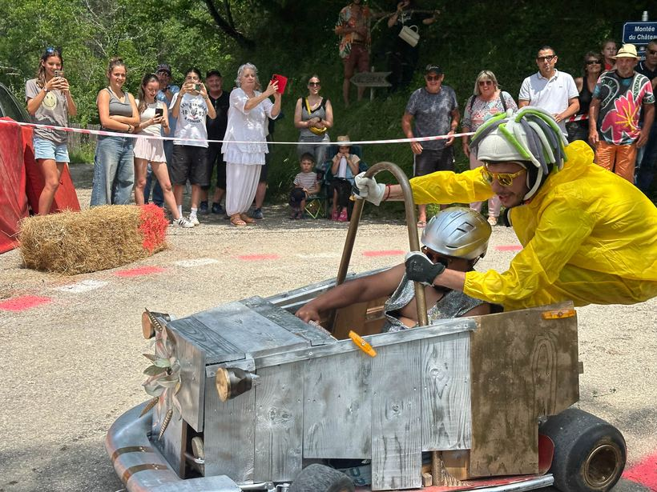
Été
La montée du château
La désormais célèbre course de caisses à savon dévale les ruelles sous les applaudissements.
Vallée de la Drôme — Le Diois
Cent cinquante habitants accrochés au flanc du Diois, entre vignes exposées plein sud, falaises de calcaire et le murmure de la Drôme. Le berceau de la Clairette de Die se vit au rythme des saisons.
Posé sur les premières pentes du Diois, à quelques kilomètres de Die, Barsac regarde la vallée de la Drôme entre les contreforts du Vercors. Le village, que son ruisseau partage en deux quartiers, serre ses maisons de pierre autour d'une église qui abrite une borne milliaire romaine — et l'on y connaît encore le nom de chacun.
Petite par sa population, la commune est grande par son caractère : depuis le coteau, le regard porte sur les vignes de Vercheny et la silhouette des Trois Becs. On vient à Barsac pour le calme — on y reste pour les gens.
Démarches & mairie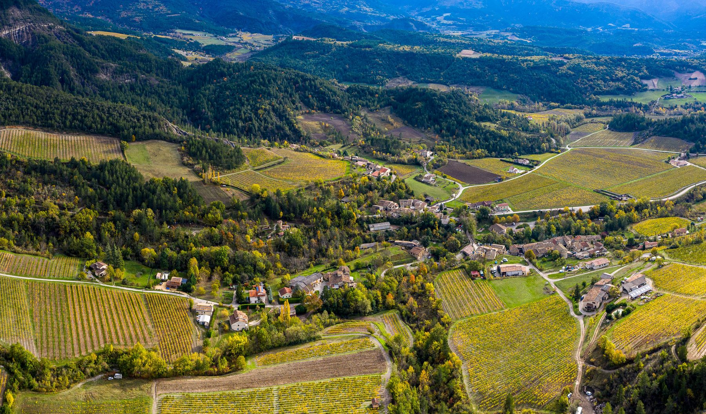
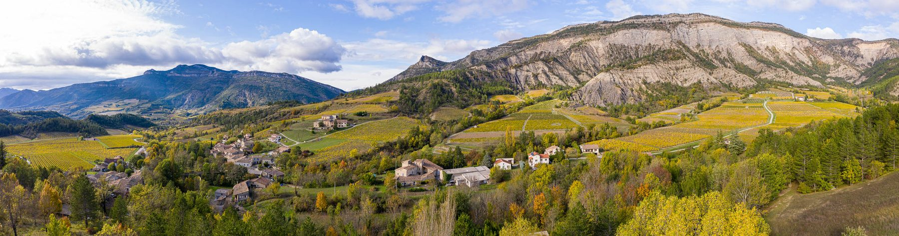
« On respire ici comme nulle part ailleurs. »
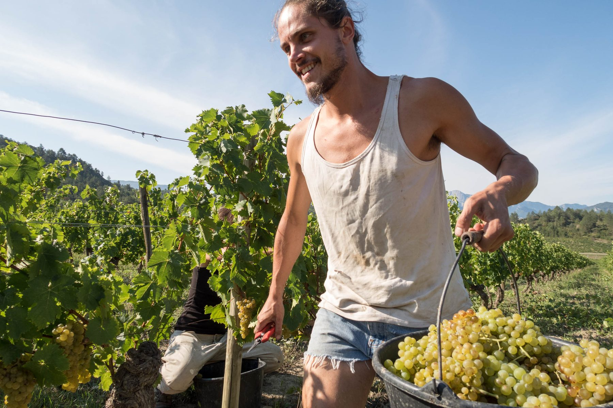
Barsac est le berceau de la Clairette de Die. Quelque 150 hectares de vignes exposées plein sud s'étagent ici entre marnes et pins noirs. Clairette et muscat blanc à petits grains, cultivés dans la vallée depuis le Moyen Âge, donnent des vins frais, vifs, marqués par l'altitude.
Des vendanges de septembre à la taille de l'hiver, le calendrier du village suit celui de la vigne. Huit caves indépendantes travaillent le coteau et ouvrent volontiers leur porte aux curieux.
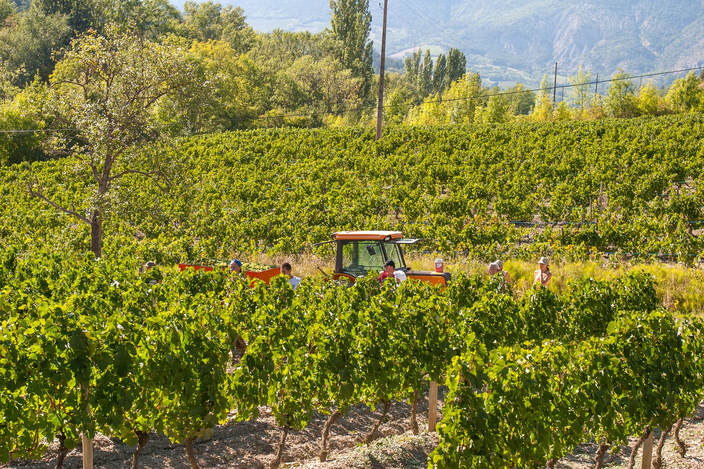
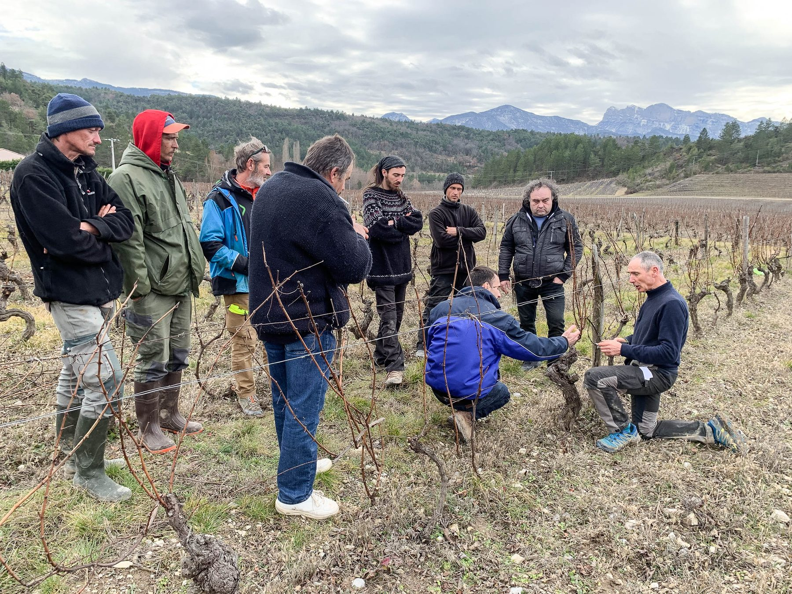
Marchés, concerts dans les caves, courses de caisses à savon, défilés, spectacles sous les platanes : à Barsac, les saisons sont prétexte à se réunir. Voici quelques rendez-vous qui font battre le cœur du village.

La désormais célèbre course de caisses à savon dévale les ruelles sous les applaudissements.
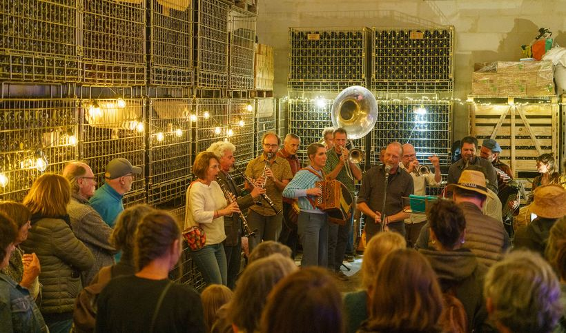
Quand la cave se transforme en salle de bal : fanfares, accordéon et vin nouveau.
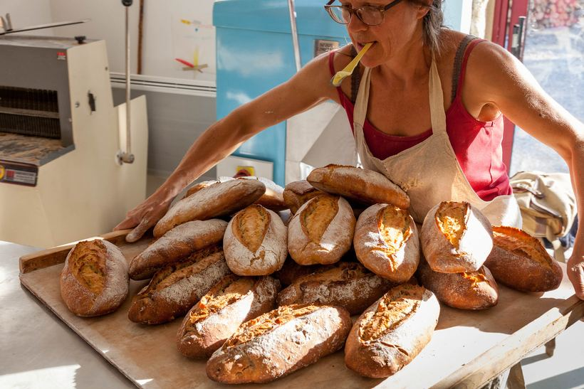
Pain au levain, fromages de chèvre, miel et légumes : le bon, le proche, le vrai.
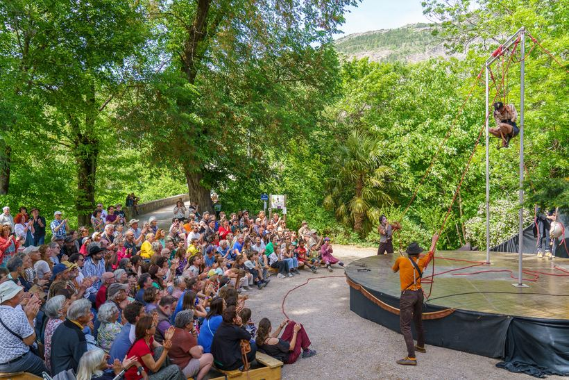
Cirque, théâtre de rue, musique vivante : la place du village devient scène.
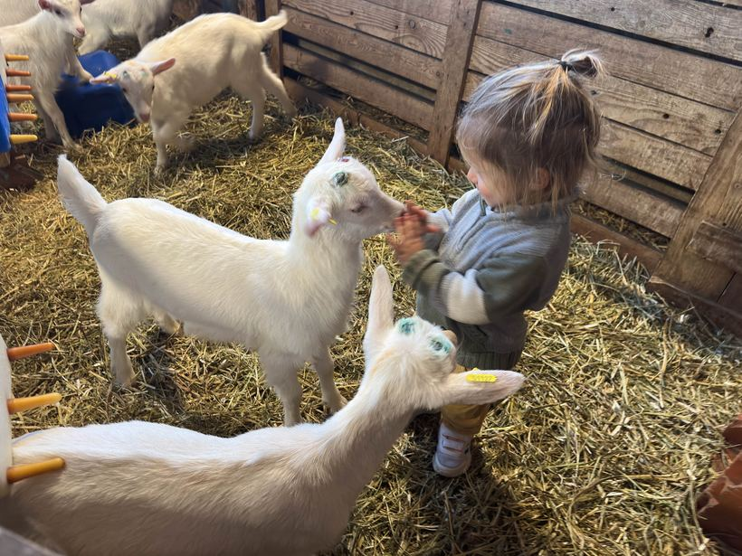
Portes ouvertes à la chèvrerie : la relève du village a quatre pattes et beaucoup de tendresse.
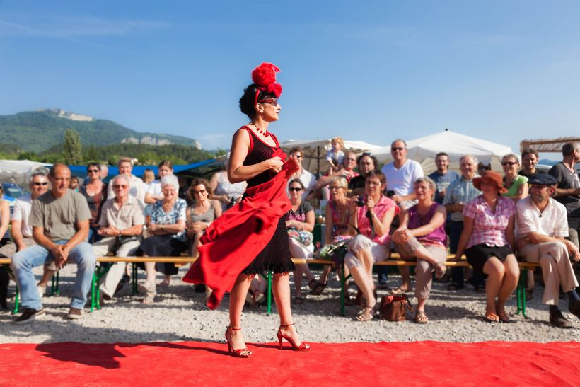
Bals, repas partagés et défilés : trois jours où le village ne dort pas.
Dates communiquées par la mairie et les associations. Pensez à confirmer auprès des organisateurs.
Place de la Mairie · 17 h – 21 h · buvette & grillades
Spectacle de rue & concert · place du village · entrée libre
Départ montée du château · 14 h · inscriptions en mairie
Repas de village & bal · sur réservation · salle des fêtes
Place de la Mairie · 16 h – 20 h · artisans & producteurs
Les Chemins de la Clairette serpentent entre les vignes, la Drôme invite à la baignade et Die n'est qu'à quelques kilomètres, aux portes du Vercors : le pays diois est un terrain de jeu à ciel ouvert, été comme hiver.
Chemins de la Clairette · sentiers de randonnée · VTT & gravel · baignade en rivière · patrimoine de pierre
En dehors de la permanence, contactez-nous par téléphone ou par courriel.